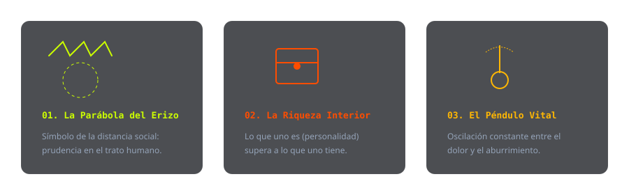

Lenguaje Simbólico y Metáforas

El lenguaje simbólico se resume en varias ejemplos. Para hacer un poco más comprensible los textos filosóficos densos de Schopenhauer, él recurre a símbolos que ilustran la tensión entre el individuo y su mundo interior y la vida social y lo que exige. Y lo hace mediante metáforas que actúan dentro de las mismas ideas cortas que están presentes dentro de todo el texto. Primero tenemos el péndulo vital. Es el símbolo central del estudio del ser humano desde Schopenhauer. La existencia se describe como un movimiento que va de un lado al otro perpetuamente y que se encuentra entre el dolor y el aburrimiento y que jamás encuentra reposo. Siempre está entre esas dos. El dolor es causado por la carencia y el aburrimiento por la satisfacción de lo que antes se deseaba. La felicidad no es un punto de llegada, sino que es un destello pasajero en el punto medio de este péndulo. El dilema del erizo nos ilustra la sociabilidad humana. Eh, pone el ejemplo de los erizos en un día frío, eh, los cuales se acercaban buscando el calor de los otros, pero sus púas no los dejaban acercarse porque se hacían daño. Los seres humanos somos así. Nos acercamos unos a otros buscando la compañía, pero nuestros defectos, egoísmos y nuestra manera áspera de ser inevitablemente nos hieren el uno al otro. Este símbolo nos enseña que para sobrevivir en una sociedad sin aniquilarnos los unos a los otros, es necesario mantener distancia prudente que permita la convivencia sin el daño mutuo. Finalmente, tenemos la riqueza interior como uno de estos ejemplos. Frente a el vacío del mundo exterior, Schopenhauer dice y simboliza la vida sabia como un espacio cerrado y autosuficiente que puede vivir desde el propio ser. Mientras un hombre común depende de la opinión ajena, el hombre con la razón y con la ilustración encuentra su propia riqueza interior desde su cultura, su capacidad reflexiva y su espíritu cultivado. Es una lucha constante entre la precariedad y la fortuna. Eh, esto es claramente eh un símbolo que demuestra la única forma de libertad real, la capacidad de prescindir de lo externo para habitar cómodamente en la propia mente.